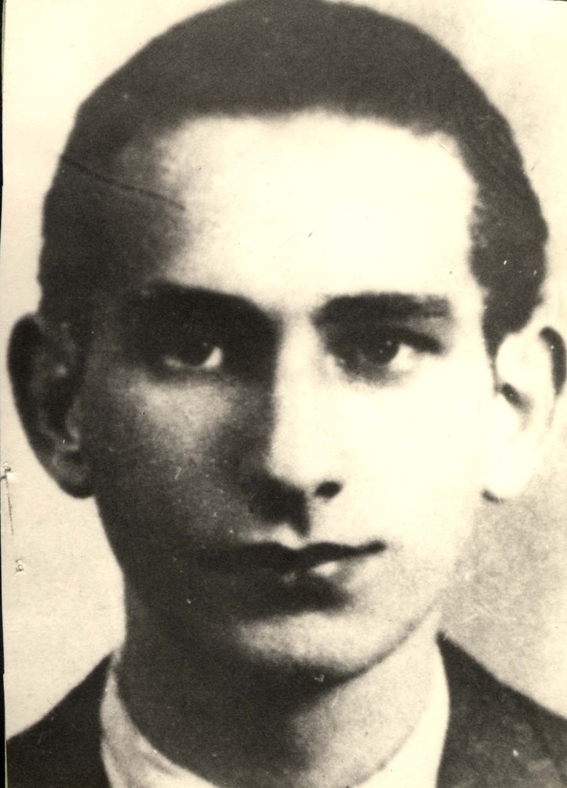

Portrait d’archive
Maurice Korzec [alias Henri Marcellin] (F)
Maurice KORZEK
Maurice KORZEK est né le 09/04/1924 en France. Tailleur ; syndicaliste ; Résistant au sein des FTPF.
Dernière adresse connue : Marseille
École fréquentée : Villeurbanne
Nom : KORZEK
Prénom(s) : Maurice Misha
Date naissance : 09/04/1924
Âge (ans) : 19
Lieu naissance : Herserange
Pays ou département : Meurthe-et-Moselle
Dernière adresse :
Ville : Marseille
Code postal :
Date d’exécution : 13 septembre 1943
Informations diverses : [dit Henri MARCELLIN] Né le 9 avril 1924 à Herserange (Meurthe-et-Moselle). Fils de Mordekhai et de Ester Korzek. Sa famille s’installe à Paris dans le 19è arrondissement au 37 rue Alphonse Karr. Maurice est ajusteur à Boulogne-Billancourt et militant communiste. Il quitte la capitale le 10/05/1940 pour rejoindre son usine évacuée à Marseille. Après l'invasion allemande de la zone sud fin novembre 1942, il rejoint les FTP en mars 1943, Il participe notamment à l'attaque d'une caserne allemande le 08/05/1943 et à l'attaque de plusieurs locomotives et d'un dépôt d'essence à la gare d'Arenc. Entré dans les FTP en mars 1943, il est affecté au détachement MOI de Marseille comme chef d'un groupe de choc. Il participe à plusieurs opérations. Le 05/06/1943, au court de la violente fusillade qui suit l'attaque du Capitole, cinéma réservé aux soldats allemands, il est blessé et arrêté. Transféré au Fort Monluc à Lyon, il est torturé et fusillé le 13/09/1943 à Lyon (Rhône), retrouvé dans un charnier à La Doua, à Villeurbanne (Source: Maitron).